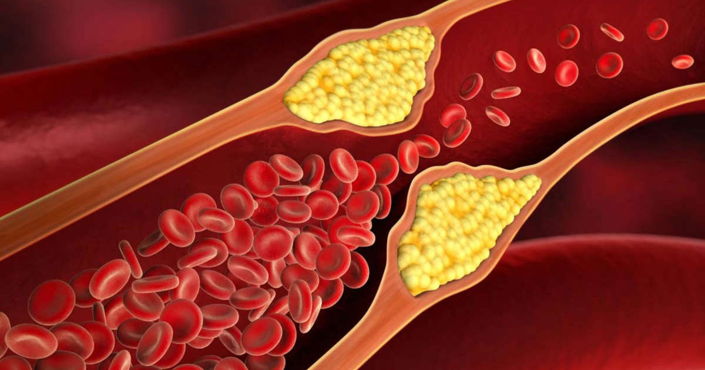
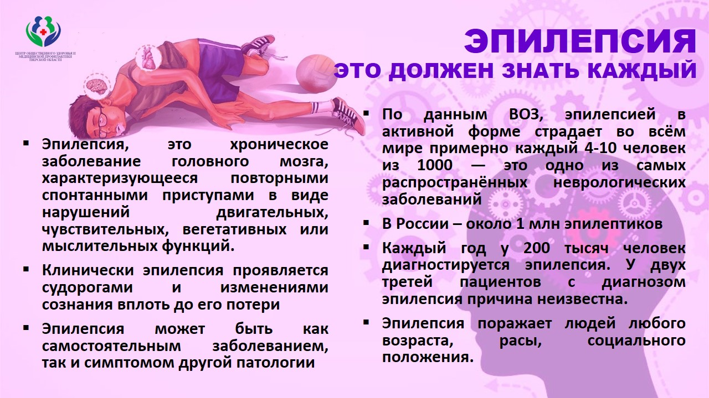

Подразделения
Администрация ЦРБ

Адрес: 171984, Тверская обл., Бежецкий р-н, г. Бежецк, Больничный пр-д, д. 4
График работы: Пн. - Пт. 08:00 - 17:00
Главный врач: Михайлов Владимир Николаевич
Секретарь: Валюженич Елена Сергеевна - 8(48231)2-02-31 / 8(48231)2-10-85(факс)
Главный бухгалтер: Иванова Татьяна Николаевна - 8(48231)2-03-23
Зам. главного врача по экономическим вопросам: Ванюшина Нина Ивановна -
8(48231)2-26-16
Взрослая поликлиника
Адрес: 171984, Тверская обл., Бежецкий р-н, г. Бежецк, ул. Льва Толстого, д. 17
График работы: Пн. - Пт. 07:30 - 19:00; Сб 08:00 - 14:00
Зам. главного врача по поликлинической работе: Бахарева Елена Юрьевна -
8(48231)5-08-07
Зам. главного врача по клинико-экспертной работе: Лобанова Галина Анатольевна -
8(48231)2-09-24
Старшая медсестра: Васильева Наталья Михайловна - 8(48231)5-08-09
Регистратура: - 8(48231)2-06-54
Детская поликлиника
Адрес: 171984, Тверская обл., Бежецкий р-н, г. Бежецк, ул. Садовая, д. 15
График работы: Пн. - Пт. 08:00 - 18:00; Сб 08:00 - 14:00
Зам. главного врача по детству и родовспоможению: Самосадная Ольга Евгеньевна -
8(48231)2-03-31
Старшая медсестра: Писанова Оксана Васильевна - 8(48231)2-03-31
Регистратура: - 8(48231)2-28-71
Женская консультация
Адрес: 171984, Тверская обл., Бежецкий р-н, г. Бежецк, ул. Нечаева, д. 26
График работы: Пн. - Пт. 08:00 - 15:00
Заведующий женской консультации: Голубев Сергей Владимирович - 8(48231)2-06-53
Старшая медсестра: Елисеева Татьяна Павловна - 8(48231)2-06-53
Регистратура: - 8(48231)2-06-53
Акушерско-гинекологическое отделение
Адрес: 171984, Тверская обл., Бежецкий р-н, г. Бежецк, пер. Первомайский, д. 27
График работы: Круглосуточно
Заведующий отделением: Шарафанова Ольга Анатольевна - 8(48231)2-38-38
Старшая медсестра: Костина Ирина Александровна - 8(48231)2-38-38
Пост (гинекология): - 8(48231)2-39-08
Приёмное отделение: - 8(48231)2-11-92
Круглосуточный стационар
Адрес: 171984, Тверская обл., Бежецкий р-н, г. Бежецк, пер. Первомайский, д. 25/23
График работы: Круглосуточно
Зам. главного врача по медицинсой части: Булыгина Ирина Викторовна - 8(48231)2-23-25
Главная медсестра: Ратникова Валентина Васильевна - 8(48231)2-13-32
Приёмное отделение
Старшая медсестра: Серова Наталья Сергеевна - 8(48231)2-19-25
Приёмное отделение: - 8(48231)2-19-25
Терапевтическое отделение
Заведующий отделением: Голубева Ольга Петровна - 8(48231)2-24-99
Старшая медсестра: Виноградова Елена Анатольевна - 8(48231)2-24-99
Анестезиолого-реанимационное отделение
Заведующий отделением: Ашевский Андрей Борисович - 8(48231)2-23-61
Старшая медсестра: Денисенко Марина Алексеевна - 8(48231)2-23-61
Травматологическое отделение
Заведующий отделением: Цырцыхин Владимир Владимирович - 8(48231)2-05-54
Старшая медсестра: Жукова Ирина Александровна - 8(48231)2-09-21
Хирургическое отделение
Заведующий отделением: Пухляков Игорь Иванович - 8(48231)2-06-52
Старшая медсестра: Кудрявцева Татьяна Юрьевна - 8(48231)2-07-32
Офтальмологическое и оториноларингологическое отделения
Заведующий офтальмологическим отделением: Лобанова Галина Анатольевна -
8(48231)2-26-14
Заведующий оториноларингологическим отделением: Сорокина Людмила Тимофеевна -
8(48231)2-36-12
Старшая медсестра: Соколова Капиталина Владимировна -
Первичное сердечно-сосудистое отделение
Адрес: 171984, Тверская обл., Бежецкий р-н, г. Бежецк, ул. Нечаева, д. 10/29
График работы: Круглосуточно
Неврологическое отделение
Заведующий отделением: Журавлев Борис Владимирович - 8(48231)2-26-05
Старшая медсестра: Маслова Ольга Валерьевна - 8(48231)2-26-70
Кардиологическое отделение
Заведующий отделением: Гусев Игорь Геннадьевич - 8(48231)2-07-33
Старшая медсестра: Олисова Валерия Валерьевна - 8(48231)2-07-33
Детское отделение
Заведующий отделением: Малахаева Людмила Васильевна - 8(48231)2-17-01
Старшая медсестра: Борина Оксана Ивановна - 8(48231)2-17-01
Противотуберкулезное отделение
Адрес: 171984, Тверская обл., Бежецкий р-н, г. Бежецк, Больничный пр-д, д. 7
График работы: Пн. - Пт. 08:00 - 15:00
Старшая медсестра: Цепникова Татьяна Владимировна - 8(48231)2-25-42
Стоматологическое отделение
Адрес: 171984, Тверская обл., Бежецкий р-н, г. Бежецк, ул. Льва Толстого, д. 17
График работы: Пн. - Пт. 08:00 - 15:00
Старшая медсестра: - 8(48231)2-00-10
Регистратура: - 8(48231)2-00-10
Клинико-диагностическая лаборатория
Адрес: 171984, Тверская обл., Бежецкий р-н, г. Бежецк, ул. Льва Толстого, д. 17
График работы: Пн. - Пт. 08:00 - 15:00
Заведующая отделением: Алехина Анна Ивановна - 8(48231)2-12-85
Старшая медсестра: Питерцева Людмила Викторовна - 8(48231)2-12-85
Патологоанатомическое отделение
Адрес: 171984, Тверская обл., Бежецкий р-н, г. Бежецк, Больничный пр-д, д. 4а
График работы: Пн. - Пт. 08:00 - 15:00
Заведующий отделением: Алексеев Михаил Алексеевич - 8(48231)2-17-80

Скрыть
Если у вас повышен холестирин
Поговорим об уровне холестерина сыворотки крови. Если вы знаете один показатель общего
холестерина, это уже хорошо, но лучше, если вы знаете так называемый холестериновый профиль, то
есть еще 3 цифры, указывающие на содержание трех фракций- составляющих общий холестерин
сыворотки крови. При этом заметьте, что 2 из них не должны быть высокими, и одна - низкой.
Сегодня многие считают это самым важным и самым «модным» анализом потому, что измененный
холестериновый профиль они считают риском развития атеросклероза, а, следовательно, риском
развития инфаркта миокарда и инсульта. И отчасти, эти люди правы. Однако сразу скажем, что
инсульт и инфаркт может развиваться и при несильно измененном профиле, и наоборот, иногда при
высоком уровне холестерина развиваются сосудистые катастрофы. Потому что имеет значение
состояние холестериновой бляшки (ее «рыхлость», налипание тромбов и воспаление), имеют значение
иные факторы риска: сахарный диабет, артериальная гипертензия, курение, и конечно,
наследственность.
Нормальные значения (ориентировочно, потому что в каждой лаборатории нормы свои и они обязательно
указаны в результатах):
- Общий холестерин менее 5.0 ммоль/л
Фракции:
- Липопротеиды низкой плотности менее 3.0 ммоль/л
- Триглицериды менее 1.7 ммоль/л
И «хорошая» фракция холестерина, которой должно быть много, потому что считается, что она
защищает сосуды от бляшек.
- Липопротеиды высокой плотности более 1.2 ммоль/л

Если у вас один или несколько показателей отличаются от нормы, вам следует:
1. Желательно повторить анализ (в хорошей лаборатории, принято считать, что лучше – натощак)
2. Оценить, есть ли у вас другие факторы риска (включая наследственность – тяжелые инфаркты и
инсульты у близких родственников в возрасте до 60-65 лет). Если да, то вам более серьезно нужно
принимать меры.
3. Желательно сделать ультразвуковое исследование сосудов шеи: вы оцените кровоток, бляшки в них
и косвенно сможете судить о состоянии коронарных сосудов сердца)
4. Начать действия по нормализации холестерина и фракций (как правило, все изменения профиля при
них происходят одновременно в нужных направлениях)
Какие это действия?
Существует 4 рычага для нормализации уровня холестерина крови:
- хорошая физическая нагрузка – движение более 2 часов в неделю
- правильное питание: умеренное, разнообразное, с добавлением овощей, орехов рыбы, разумным
ограничением жиров (в том числе скрытых), сахара и соли
- снижение массы тела, нормализация индекса массы тела, объема талии
Многим эти меры помогают. Но как бы то ни было, это является обязательным условием.
Если нет, то приходится решать вопрос о лекарствах – 4 «рычаге». И здесь есть хорошие и плохие
новости.
Хорошие новости заключаются в том, что сейчас существует огромный набор лекарств, нормализующих
холестерин и фракции. И медицина научилась бороться с плохим холестерином: результаты больших
исследований говорят о том, что на фоне правильного приема медикаментов снижается вероятность
развития инфарктов и инсультов.
Не очень хорошие новости: эти лекарства надо принимать длительно - практически постоянно; они не
дешевые, и у них могут встречаться побочные явления.
В любом случае проконсультируйтесь с врачом!
Также следует сказать, что принимают лекарства с целью достижения определенных показателей
профиля – целевых значений. Их каждому человеку установит врач. И тут целая стратегия – достигли
– хорошо! Не достигли – дозу или препарат следует поменять.
Сказать об этом важно, потому что кратковременный, курсовой прием препаратов, нормализующих
холестерин, как правило, бесполезен. Так что если вы выбираете четвертый «рычаг» - сформируйте
нужный психологический и жизненный настрой.
Про физическую нагрузку – ходьбу, плавание, велосипед и лыжи в этом случае забыть все равно
никак нельзя!
Будьте здоровы!
Если результат теста на глюкозу крови выше нормы?
Показатель глюкозы крови в норме - 3.9-6.1 ммоль/л.
Сразу подчеркнем, что это в некоторой степени ориентировочные значения. В каждой лаборатории
нормальные границы глюкозы (сахара) крови свои (впрочем, как и всех иных параметров). Поэтому
сравните с нормой, которая всегда указана.
Ну и второй важный момент:
Это натощак!
Иногда случается так, что вы пришли в лабораторию не натощак и сдали анализ крови на сахар. Эти
значения тоже могут быть учтены, но они иные, естественно, как правило, выше. И тут «своя
арифметика», и они оцениваются врачом. Поэтому если вы получили анализ теста с повышенным
уровнем глюкозы, для начала вспомните, не скушали ли вы перед этим булочку.
Ну а теперь о главном.
Уровень глюкозы крови выше нормы может быть признаком сахарного диабета. Может… Чтобы это
подтвердить следует повторить тест, через какое то время, в другой лаборатории, и строго
натощак. И обратиться к врачу.
Вероятно, вам будет поставлен диагноз сахарного диабета, или преддиабета. Даже при отсутствии у
вас каких-либо жалоб! Диабет очень часто протекает скрыто! Вот в чем его опасность!
Это особенно важно при неблагоприятной наследственности и ожирении. Поэтому если у вас
наследственность по диабету отягощена (сахарный диабет у близких родственников), то читайте
результат внимательнее и задумайтесь сильнее. Ваш риск диабета выше – это уже несомненный
научный факт
И второй фактор риска и повод для более внимательного «поиска» диабета. Это ожирение! Избыточная
масса тела.
Рассчитайте свой Индекс массы тела: разделите массу тела (кг) на рост (м) в квадрате. Значение
более 25 – у вас избыточный вес! Особенно нехорошо это в сочетании с большим объемом талии (то
есть фигура в виде «яблока»), более 90 -95 см (в среднем)
Диабет опасен не сам по себе, а сердечно-сосудистыми осложнениями (инфаркты, инсульты, закупорка
артерий конечностей и др.). И тут важно не только контролировать уровень глюкозы крови, но
уровень холестерина, уровень гликированного гемоглобина, артериального давления, да и вообще
научиться заботиться о своем сердце и сосудах.
А закончим мы хорошими новостями.
Сейчас доказано, что сахарный диабет успешно контролируется. Нет, не излечивается! Но при нем
можно долго и качественно жить. Рекомендовано лишь много двигаться, сбросить лишний вес, следить
за уровнем сахара и скорее всего, принимать лекарства. Кстати, доза их будет меньше, если вы
больше двигаетесь, правильно питаетесь и имеете нормальный индекс массы тела.
Скрыть
Эпилепсия

Эпилепсия(дети)
Скрыть
Артериальная гипертензия – болезнь, которую лечит не только врач
Гипертония, гипертензия, высокое артериальное давление – эти слова слышит от врача и
«примеряет» на себя каждый третий россиянин старше 40 лет. Будь то мужчина или женщина. У
мужчин давление повышается также часто, как и у женщин. Только они об этом не знают, хотя
для них это более опасно.
При этом многие «гипертоники» возлагают всю ответственность на врача за лечение гипертонии
и, главное, за то, чтобы она не привела к инфаркту или инсульту.
Но без активного участия самого пациента ни один врач не сможет эффективно «контролировать»
давление, держать болезнь в тех рамках, которые не будут опасными. Давление будет «прыгать»,
лекарств будет много или мало, состояние органов- «мишеней» - почек, мозга, сердца- будет с
каждым годом ухудшаться и приведет к катастрофе или необратимым изменениям.
Что делать если у вас в карточке появился диагноз «гипертония»?
Прежде всего, оцените ситуацию, свою «новую реальность»! Это - не приговор! Болезнь, увы, с
вами будет пожизненно. Но! На сегодняшний день медицина и фармакология подарила нам массу
средств для эффективного лечения, или как сейчас говорят, эффективного контроля гипертонии.
Эти средства надо выбрать и умело к себе применить. Это сможете сделать только вы сами
вместе с врачом. Да, у вас появилась в жизни еще одна «забота» - контролировать свое
артериальное давление. И такой настрой – самое главное!
Помните!
Артериальная гипертензия встречается часто. Как правило, начало заболевания протекает
незаметно. Если у вас бывает головная боль, боль в сердце – не спешите принимать парацетамол
или аспирин! Задумайтесь, не повышается ли у вас артериальное давление. Измеряйте его,
записывайте значения и обратитесь к врачу.
Артериальная гипертензия наследуется. Если у близких родственников имеется эта патология –
обратите внимание, нет ли признаков артериальной гипертензии у вас.
В настоящее время доказано, что очень часто гипертензия встречается у мужчин. И именно
мужчины не обращают на это внимание.
Артериальная гипертензия опасна не сама по себе, а своими осложнениями – инсультами и
инфарктами. Лечитесь правильно и не допускайте развития осложнений.
А теперь про измерение артериального давления.
Имейте ввиду: вам теперь придется измерять себе давление. Дома, на работе, на даче, в
поездках. Самим или просить родственников, что предпочтительнее.
Поэтому вам придется:
- этому научиться
- включить процедуру измерения давления в рутинный перечень дел, как чистка зубов, например
купить хороший и удобный тонометр, который вам захочется брать в руки.
Сделайте себе подарок – купите современный тонометр! Тонометр должен быть у каждого человека
старше 35 лет. Как зубная щетка или термометр. Отметим, что для домашнего использования
рекомендованы автоматические тонометры – это удобно, а значит, измерение давления войдет в
привычку. Автоматические тонометры надежны. В современных автоматических тонометрах стоят
хорошие датчики, тонометры откалиброваны, прошли много хороших испытаний, в них удобные
манжеты. А уж накачать воздух в манжету тонометр точно сможет лучше вас.
Единственный случай, когда вам придется делать выбор между «ручным» и «автоматическим»
тонометром- это аритмия, чаще всего мерцательная. И в этом случае, вам придется довериться
уху, автоматический тонометр с такой задачей не справится. Измерять давление при
мерцательной аритмии сложно, но именно при ней измерять его надо особенно часто и правильно.
При аритмии инсульты случаются намного чаще.
Подарите тонометр родителям, друзьям и близким.
Регулярно проверяйте исправность домашнего тонометра, заменяйте батарейки. Если давление
выходит из- под контроля, удостоверьтесь, что это дело не в тонометре.
Измерять давление надо правильно! Конечно, ошибка не будет катастрофической. Но 10-15 мм рт
ст каждый раз, а это уже лишнее лекарство, лишние переживания… Прочитайте правила измерения
давления. Соблюдайте хотя бы некоторые из них. Возьмите за правило «соблюдать правила» и это
быстро станет привычкой.
Если вы запланировали посещение врача, возьмите с собой «дневник давления» - за 3-5 дней,
например. Только так врач сможет вам подобрать эффективное лечение. Давление меняется в
течение дня. На 20-25 мм рт ст. Это зависит от времени суток, еды, работы, хорошего и
плохого настроения, разговора по телефону. Вы же сами понимаете, как важно знать про себя
больше – как «ведет» себя давление в течение дня, а вдруг вы примете лекарство когда
давление очень низкое. Или не примете лекарство быстрого действия при кризе, когда давление
200 мм рт ст и выше. Ведь это далеко не всегда ощущается. Когда вы и врач увидит ваш
«дневник» давления, картина будет намного яснее. А лекарства сейчас имеют различную
длительность действия, пик действия – от 2 до 24 часов.
Вы уже поняли, что без дневника давления и тонометра вам никак не обойтись!
Лекарства!!! Да! Скорее всего - да! Навсегда! Но есть что то важное и до лекарств, поговорим
об этом.
Задайтесь вопросом: сколько соли вы потребляете с пищей. Гипертоникам разрешено совсем
немного – только чайная ложка соли в день.
Поищите рецепты приготовления обеда и ужина с минимальным количеством соли. Поверьте, это
намного вкуснее. Привыкнуть? Вы привыкнете уже через неделю. Поверьте - это не сказка. От
соли страдают стенки сосудов и почки.
Гипертоники должны много гулять! Ходить, кататься на велосипеде, на роликах, плавать. Вы
увидите, что при подвижном образе жизни ваше давление будет снижаться само по себе. Но!
Перед прогулкой в хорошем темпе - измерьте давление! Лучше это сделать и при возвращении
домой.
У вас лишний вес? Попробуйте снизить.
Посчитаем: соль - движение – и вес = все вместе «ответит» за снижение давления на 15-20 мм
рт ст. А это немало…И без лекарств!
Вы еще курите? Это кошмар! Просто кошмар! И не надо рассказывать и ставить на себе
эксперименты – как сигарета, современное средство электронное влияет на ваше давление…
запомните! Сотни исследований на тысячах людей доказали – курение плюс артериальная
гипертензия – это сочетание - величайшее зло на свете! Какие еще эксперименты вам нужны?
Немедленно продумайте план как вам бросить курить. Откроем еще один секрет. Курите – будет
тратить больше денег на лекарства- у курильщиков они «работают» хуже. Деньги на сигареты да
больше денег на лекарства!!! Вы собираетесь работать только на это?
Про алкоголь… ну конечно… Скажем сразу - табак опаснее. Рекомендовать алкоголь для снижения
давления не будем ни в коем случае. Запрещать? Допустимую дозу алкоголя (в пересчете на 10
мл спирта) в день… И все. Сумеете остановиться? Бокал вина? Рюмочку коньяка? В компании. За
хорошей закуской. Под настроение И все. Узнайте, как алкоголь в такой дозе влияет на ваше
давление.
Об очень важном!
Холестерин, сахарный диабет. То, что определит ваш прогноз не меньше, чем уровень давления.
Каждому гипертонику помимо цифр артериального давления полезно знать еще несколько цифр.
Холестерин крови
Липиды низкой плотности
Сахар крови
Рост, вес, индекс массы тела
Объем талии.
Почему? Потому что вероятность развития инфаркта и инсульта при одинаковых цифрах давления
выше при «ненормальных» перечисленных показателях. Знайте их! Если они за пределами нормы-
читайте, консультируйтесь- как их нормализовать… Вместе с давлением. У вас есть еще одна, не
менее важная задача.
Ну а теперь о лекарствах!
Если вы принимаете лекарства от гипертонии – запомните: скорее всего, их надо принимать
постоянно. Приобретите таблеточницу, храните ее на видном месте.
Проверьте, не заканчиваются ли лекарства. Пропуск таблеток может быть опасным. Не
откладывайте поход в аптеку. Это важнее, что поход в магазин. Изучите инструкцию. Знайте о
побочных эффектах. Это ваше лекарство! И ваш организм. Только вы сами знаете их лучше всего.
Возможно, у вас не одно лекарство или комбинированное средство. Тем более – найдите время и
изучите препараты.
Если давление «вышло из- под контроля».
Очень важный момент! Который, скорее всего, случится с каждым гипертоником. Причин этому
много. Может быть сопутствующая патология (ну например, заболели суставы), повысился сахар
крови, если у вас есть диабет, стресс, изменение окружающей обстановки. И много-много
других. Что делать?
Трезво оценить ситуацию и поискать причину. Сначала самому, потом вместе с врачом. Точно
оценить «масштаб проблемы», то есть измерять давление чаще. Проверить тонометр и срок
годности лекарств. И вовремя обратиться к врачу. Возможно, вам увеличат дозировку или
поменяют лекарство. На какое -то время. И вы снова войдете в «стабильное» состояние.
И в заключение- об опасных признаках.
Давящая боль за грудиной – признак инфаркта. У вас есть несколько минут чтобы вызвать скорую
помощь.
Внезапная слабость в руке или ноге, перекосило лицо, вы не может сказать пару слов –
признаки инсульта. У вас есть лишь час чтобы позвонить в скорую.
Будьте здоровы!
Скрыть
Быть физически активным полезно

Уже и не спорят: быть физически активным полезно! Но все- таки иногда хочется спросить…
1. Правда ли, что если начать двигаться, польза будет для многих систем органов, а не только
для похудения?
Да! Мы «одним выстрелом убиваем несколько зайцев». Польза сердцу, легким, кишечнику,
суставам, коже, печени. Вот вывод, который опубликовали англичане, и которая очень
пригодится всем, особенно тем, кто любит посчитать- сколько потратил и сколько получил.
«Если бы физическая активность была таблеткой, это было бы самое эффективное лекарство в
мире с точки зрения затрат» (Сайт Национальной системы здравоохранения Великобритании,
материалы для пациентов)
2. Неужели так почему так просто и так здорово?
Да! И это потому, что когда вы двигаетесь, у вас улучшается кровоток во всех сосудах,
капиллярах и укрепляются все мышцы. А сосуды и мышечная ткань есть во всех органах.
3. А правда, что люди которые двигаются выглядят моложе?
Да! Правда! Это потому что открываются капилляры в коже (в ее среднем слое) и улучшается
питание. Попробуйте пробежаться- и вы почувствуете прилив крови и тепла к лицу, лицо
покраснеет… А вместе с эти в кожу придут влага, витамины, белки.
4. Мы слышали про доказательную медицину. А проводились ли исследования с участием людей,
которые доказали пользу физических нагрузок?
Да! Конечно! и таких исследований очень много. Было доказано, что сахарный диабет,
остеопороз, инфаркт миокарда возникают в несколько раз реже у физически активных людей. Ряд
исследований показал, что даже онкопатология - молочной железы, кишечника также реже
встречаются у людей, которые любят активный образ жизни.
5. А стоит ли быть физически активным, если уже есть заболевания, например, такие как
сахарный диабет, артериальная гипертензия, ишемическая болезнь сердца, боль в спине?
Да! Безусловно. Существует много доказательств того, что все перечисленные заболевания
прогрессируют медленнее у физически активных людей. Есть также данные о том, что при
увеличении физических нагрузок необходимо меньше принимать лекарств: в частности,
сахароснижающих, гипотензивных. А боль в спине проходит при выполнении упражнений. Только
таким людям необходимо проконсультироваться с врачом и подобрать адекватную физическую
нагрузку.
6. Существуют различные виды физической активности. И надо плавать, бегать, ходить в
тренажерный зал. А обычная ходьба большой пользы не приносит. Так это?
Нет! Хороша любая физическая нагрузка. И ходьба рекомендуется в первую очередь. Главное,
потому что это- самый доступный вид физической активности, и начать просто гулять для
большинства людей гораздо проще, чем найти бассейн или водоем, записаться в тренажерный зал
или найти велодорожку.
7. А все- таки сколько и как правильно надо двигаться?
Двигаться полезно в любом темпе и столько сколько можете. В любом случае это принесет
пользу. Но наибольшую пользу приносит движение около 2-3 часов в неделю. Распределите это
время по 40-45 минут ежедневно или через день. Вот такая «норма» физической активности
рекомендована специалистами. Помимо общего времени желателен достаточный темп физической
активности. Если вы хотите достичь желаемого эффекта, котором мы уже говорили, необходимо
учащение пульса. Его можно измерять, и пульс должен увеличиваться до 100-110 в минуту для
здоровых людей. Субъективно это ощущается легкой усталостью и потливостью. После прекращения
нагрузки пульс должен вернуться к норме в течение 2-3 минут. Если этого не происходит, или
пульс при нагрузке возрастает в большей степени, начните тренировки с меньшей
интенсивности.
8. Все понятно, но начать бывает так сложно. Устал… нет времени… и начать здоровый образ
жизни никак не получается.
А вы начните постепенно. Несколько минут, через день, по выходным, в хорошем настроении. Не
делайте из этого обязанность. Обязательно! Обязательно: измените отношение – двигаться- это
удовольствие! Найдите компанию. Для прогулок выберите хорошую погоду, маршрут. Может быть,
наушники с музыкой или книгой. Иногда просто попробуйте подниматься пешком, а не на лифте.
Пройдитесь пешком вместо поездки на машине. Ставьте себе маленькие выполнимые задачи. Вы
очень скоро увидите- через 1-2 недели- что привычка двигаться уже появилась. И вам будет
плохо без движения. И вам останется только закрепить успех.
9. Но ведь существуют же противопоказания к увеличению физической активности?
Да! существуют. Это:
- Острые инфекционные заболевания
- Обострения заболевания, неполное выздоровление
- Психические заболевания, судороги и параличи
- Злокачественные новообразования и подозрения на них
- Заболевания ССС: острый инфаркт миокарда, НК 2 ст и выше, тяжелые аритмии, аневризма
аорты
- Тромобофлебит
- Склонность к кровотечениям
- Бронхиальная астма тяжелого течения
Оцените сами свое состояние и обязательно посоветуйтесь с врачом.
Движение – это здорово! Начните с малого! Начните сегодня
Скрыть
Инфаркт миокарда – профилактика и признаки, требующие решительных действий
Инфаркт миокарда – гибель сердечной мышцы вследствие закупорки сосуда сердца тромбом и
атеросклеротической бляшкой. Смертность и инвалидность от инфаркта миокарда остаются
высокими.
Меры профилактики инфаркта:
- Контролируйте артериальное давление! Регулярно измеряйте давление, значительные суточные
колебания артериального давления особенно опасны. При посещении врача возьмите дневник
артериального давления за последние несколько дней, только в этом случае возможен подбор
эффективного лекарства и его дозировки
- Принимайте гипотензивные лекарства постоянно
- Определите уровень общего холестерина крови и липидный профиль, при отклонении от нормы
обсудите с врачом действия по его нормализации
- Станьте физически активными, под контролем пульса и артериального давления больше
двигайтесь
- Откажитесь от курения табака и избыточного потребления алкоголя
- Питайтесь разнообразно, умеренно, включите в рацион больше свежих овощей
- Следите за своим весом, при избыточной массе тела примите меры по ее нормализации
В зоне риска инфаркта миокарда люди, страдающие стенокардией. При учащении приступов
стенокардии, уменьшении расстояния, провоцирующего болевой приступ, безотлагательно
обратитесь к врачу.
Это особенно важно для тех, у кого неблагоприятная наследственность по инфаркту миокарда и
инсульту, а также для тех, у кого имеются несколько факторов риска; знайте, что их сочетание
наиболее опасно.
Признаки инфаркта:
- давящая боль за грудиной
- как правило, боль носит приступообразный характер, длится от нескольких минут до часа и
более
- боль может отдавать в руку, нижнюю челюсть, сопровождаться холодным потом
Если у вас или ваших близких возникла такая боль, немедленно вызывайте бригаду скорой
помощи. Медицинская помощь, оказанная в первые несколько часов, спасет вам жизнь.
Инсульт – профилактика и признаки, требующие решительных действий
Инсульт – гибель мозга вследствие закупорки или разрыва сосуда.
Кто в зоне риска?
- лица, страдающие гипертонией
- страдающие аритмией
- люди с неблагоприятной наследственностью по инсульту, инфаркту, тяжелой гипертонии
- лица, страдающие сахарным диабетом
- люди с повышенным уровнем холестерина крови
Как избежать инсульта, или меры первичной профилактики:
Контролируйте артериальное давление! Регулярно измеряйте давление; значительные суточные
колебания артериального давления особенно опасны. При посещении врача возьмите дневник
артериального давления за последние несколько дней; только в этом случае возможен подбор
эффективного лекарства и его дозировки.
Принимайте гипотензивные лекарства постоянно
Определите уровень общего холестерина крови и липидный профиль; при отклонении от нормы
обсудите с врачом действия по его нормализации
Станьте физически активными, под контролем пульса и артериального давления больше
двигайтесь
Откажитесь от курения табака и избыточного потребления алкоголя
Питайтесь разнообразно, умеренно, включите в рацион больше свежих овощей
Следите за своим весом, при избыточной массе тела примите меры по ее нормализации
Признаки, которые требуют быстрых и решительных действий:
- перекашивание лица, асимметричность улыбки
- онемение, слабость, «непослушность» или паралич (обездвиживание) руки, ноги, половины
тела,
- речевые нарушения, затруднения в произнесении простых слов.
При внезапном появлении любого из этих признаков срочно вызывайте бригаду скорой медицинской
помощи, даже если эти проявления болезни наблюдались всего несколько минут.
Скрыть
Избыточный вес и ожирение – не только косметический дефект
Дорогие друзья! Девушки, женщины, да и мужчины (сразу заявим, что распространенность ожирения
растет именно у мужчин)! Возможно, этот радел сайта будет наиболее посещаемым, потому что
редкая девушка или женщина хотя бы раз в жизни «не садилась» на диету. Ко дню рождения,
отпуску или к новому году… Считая, что невозможность надеть узкое платье лишь портит
настроение, а не здоровье в целом.
Конечно, кто же спорит: настроение испортится, и это плохо, и это вредно само по себе.
Но избыточный вес сопряжен также с другими рисками для развития болезней. Мы подготовили для
вас несколько рекомендаций на эту тему.
Итак,
Что надо знать про избыточный вес и ожирение?
1. Каждому человеку мы рекомендуем, прежде всего, знать свои параметры: РОСТ, ВЕС, ИНДЕКС
МАССЫ ТЕЛА, ОБЪЕМ ТАЛИИ.
Нормальные значения этих параметров следующие:
Индекс массы тела (ИМТ) = вес (кг)/рост (м) в квадрате.
Не более 30, а лучше – около 25.
Рассчитать можно здесь: http://вздоровье.рф/dop/
Объем талии (см).
Женщины- не более – 90, мужчины- не более – 105.
Да, имейте ввиду, что при одном и том же весе, при одном и том же ИМТ -иметь большую талию,
то есть фигуру по форме ближе к яблоку – прогностически вреднее.
2. Если все или какие- либо значения у вас завышены, ЗАДУМАЙТЕСЬ! Мы всегда говорим- оцените
проблему, измените отношение! Вам рекомендовано предпринять шаги по нормализации массы
тела.
3. Ожирение опасно: развитием сахарного диабета, заболеваний сердечно-сосудистой системы, и
прежде всего, инфаркта, инсульта. У лиц с повышенным индексом массы тела сосудистые
катастрофы встречаются (по данным разных исследований) в 1.5-1.9 раз чаще.
4. В последние 3-5 лет появилось много доказательств того, что онкологические заболевания –
рак- также встречаются чаще у женщин и мужчин с ожирением. Казалось бы странно, однако,
объяснение этому лежит в обменных нарушениях, которые снижают защитно-барьерные функции для
подавления образующихся раковых клеток. Так что список болезней, которые связаны с
ожирением, в последние годы существенно расширился. И это тяжелые болезни. Поэтому поводов
серьезно отнестись к весу еще больше. Удивим вас – жировая ткань, это не просто лишняя
складка, это активный орган, который вырабатывает различные активные вещества, и не всегда
полезные.
5. Предпосылки для развития ожирения появляются зачастую в детстве. Литературные данные, и
наши собственные наблюдения говорят: детей с ожирением становится больше. Придешь на
утренник в детский сад и видишь - каждая пятая девочка и мальчик с животиком или вторым
подбородком. Жировые клетки закладываются в детстве. С ожирением намного труднее бороться,
чем его не допустить. А если ваши мамы и папы тоже носили животы, отнеситесь к этому еще
серьезнее.
6. Хорошая новость: для пожилых нормы веса не такие жестокие. Если вам за 60, и у вас ИМТ
чуть выше 30, вам разрешено на одно мороженое в неделю больше. Для радости, для
удовольствия! И будьте счастливы!
7. Ну и главное: спортивное крепкое тело у активной женщины или мужчины с точки зрения
красоты и здоровья ценнее индекса массы тела в 23 у вялого нетренированного его обладателя.
Запомните это, соблюдайте меру и баланс. Это придумано не нами, а опять же показано в
исследованиях. Не надо излишне себя пытать и расстраивать, а лучше гулять и радоваться
жизни.
Если вес избыточный? Наши простые, но очень важные рекомендации.
Исследований, изучающих различные подходы и стратегии снижения массы тела огромное
множество. Хирургические методы и таблетки, групповые занятия и заговоры, гербалайфы и
БАДы…
Хорошие качественные исследования подтвердили несколько ключевых принципов, без которых,
обойтись нельзя. И здесь все так же, как при «работе» с другими факторами риска: курением,
давлением… «Волшебного» средства нет, и без ваших собственных усилий (а не диетолога,
колдуньи, врача) вам не обойтись! Увы, жаль, но этот так. А мы все так ждем чуда…
1. Если вы оценили проблему, готовы к решительным действиям, то запаситесь терпением. Путь
ваш довольно долгий, не день, не месяц, а может быть, вся жизнь. Исключите из лексикона
слово «диета» - как мы говорим, так и делаем. Диета – это временно, это грустно, это
принуждение и лишение… Долго на ней не протянешь. А у вас должно быть вкусное, полноценное
красивое питание – ПОСТОЯННО, на красивой посуде и в хорошей компании.
2. Поэтому найдите компанию в борьбе за красоту и здоровье. Кстати, а у мужа как с весом? А
у дочки? Соседки? Коллеги?
3. У вас в арсенале есть только два средства: снижение калоража пищи и хорошая, очень
хорошая, превышающая калории с едой – ФИЗИЧЕСКАЯ АКТИВНОСТЬ! А может быть, и наоборот-
физическая активность и снижение калоража пищи. Так что, увы, придется посчитать, придется
прописать. У вас появится новое занятие. Когда устали, когда нет настроения, когда накричал
начальник… Но ВСЕГДА, всегда вы должны тратить больше, чем потреблять…Насколько? Ответ
простой – у всех по- разному, у вас в различные периоды по- разному.
4. Что можно кушать? Жиры? Углеводы? А что нельзя? Ответ простой- все. Но в меру. Вам,
скорее всего, придется перестроить все: маршрут прохождения продуктового супермаркета,
размер продуктовой сумки (ведь теперь там будет капуста и минеральная вода), кастрюли
сковородки, холодильник, режим дня, кошелек. У вас должны быть «сподвижники»: если дочка у
компьютера будет с чипсами, ну сложно поверить, что вы себе яблочко помоете. В любом случае-
больше низкокалорийных продуктов, овощей. И все ПРИНЦИПЫ ЗДОРОВОГО ПИТАНИЯ ВАМ ОЧЕНЬ
ПОЛЕЗНЫ! http://tvercmp.ru/files/specialist/plakat_diabet2com.pdf
5. У вас обязательно будет успех! А потом неудача. И вес остановится, или снова поднимется.
И вас кто- то обидит, и вам станет себя так жалко, что вы купите «пирожку-печеньку» и вам от
этого станет тепло и сладко. И правильно, конечно. Ну не пытать же вы себя собрались…
Попробуйте передохнуть, ну а дальше - снова… у вас же уже получалось. Получится и
опять.
6. Если баланс «не сходится» - в организм «прибывает» за столом больше, чем тратится – вам
совет: больше тратьте! Больше ходите, отмените лифт и машину, купите велотренажер. И
результат лучше, и вы будете «убивать сразу двух зайцев».
7. Есть много лайкфаков как съесть меньше: и тарелка меньшего размера, и цвета белого, и не
читать за обедом и по телефону не разговаривать. Все верно, и все работает. Погуглите для
интереса!
8. И вообще вы заслужили приз! За каждый минус-килограмм, каждый минус-дюйм талии. Радуйте
себя, радуйте!
И будьте здоровы!
Скрыть
Что нужно знать об онкологических заболеваниях
Рак, онкология - как бы угрожающе не звучали эти слова - не приговор! Если выявить вовремя, в
большинстве случаев болезнь излечивается. И с каждым днем медицина делает шаг вперед,
предоставляя нам новые способы борьбы с раком различных локализаций. Онкология – одна из
самых быстро развивающихся отраслей.
А всем остальным остаются другие, но тоже очень важные меры, направленные на профилактику
тяжелой болезни. Давайте немного поговорим об этом.
В первую очередь важно не допустить запущенной стадии рака. И на первое место выходит
СКРИНИНГ – раннее выявление рака.
ВАЖНО! Даже если у вас нет НИКАКИХ признаков болезни – пройдите некоторые обследования.
Найдите время, возможно, какие- то средства, правильно расставьте приоритеты.
Какие это обследования?
Тщательный и внимательный осмотр максимально всех возможных участков кожи и слизистых (губа,
язык, ротовая полость).
Набор обследований для выявления/исключения онкозаболеваний желудочно-кишечного тракта:
начиная с простого – анализа кала на скрытую кровь и заканчивая различными видами осмотра
желудочно-кишечной трубки. Главными методами являются: осмотр прямой кишки
(ректороманоскопия), колоноскопия (осмотр кишечника) и эзофагогастродуоденоскопия (ЭГДС,
осмотр пищевода и желудка). Эти обследования необходимо проводить не реже 1 раза в 3-5 лет,
а при выявлении крови (явной или скрытой в стуле) незамедлительно. Эти исследования обычно
назначает или проводит врач – терапевт, проктолог, гастроэнтеролог.
Женщинам: осмотр гинекологом (или акушеркой) с обязательным взятием мазков на исследование –
не реже 1 раза в год и маммография – не реже 1 раза в 2 года.
Мужчинам: ряд исследований для выявления/исключения рака предстательной железы – анализ
крови (венозной) на простатспецифический антиген (ПСА), исследований предстательной железы
(урологом, УЗИ).
ВАЖНО! Все перечисленные исследования входят в состав диспансеризации. Возьмите за правило-
проходить диспансеризацию по графику, который вам положен по возрасту.
Следующий важный момент!
Будьте внимательны к своему здоровью! Только вы сами сможете обнаружить новые признаки
самочувствия. Есть специальное выражение - онкологическая настороженность. Если у вас:
ухудшился аппетит, вы похудели, появилась бледность кожи, боль в животе, изжога, и любые
другие признаки, которых ранее вы не наблюдали – обратитесь к медицинскому работнику. Это
может быть признаком рака, и болезнь надо вовремя диагностировать.
Что еще надо знать о раке?
ВАЖНО: Причины всех раковых заболеваний пока не установлены. Обсуждаются вирусы, вредные
вещества окружающей среды и другие факторы.
Но сейчас точно установлено, что есть факторы риска, которые увеличивают риск возникновения
всех или определенных локализаций рака.
Задумайтесь об этом!
Итак:
На первом месте - курение и потребление табака. Если вы курите, то у вас вероятность
возникновения рака выше. Во сколько раз? Во много!!! И этот риск зависит от разных органов –
для мочевого пузыря – риск выше в 3-4 раза, а для рака легких, гортани, полости рта – риск
выше в 10-15 раз. Это очень много. Сейчас доказано- что нет практически ни одной локализации
рака, который не возникал бы чаще у курильщиков. Тяжелое развитие- быстрое прогрессирование
и метастазирование, лечение с осложнениями- это тоже удел употребляющих табак.
Ожирение, избыточная масса тела, и сопутствующие им нарушения углеводного обмена
(инсулинорезистентность) - это не только путь к сахарному диабету. Сейчас доказано, что у
таких людей снижаются факторы защиты от рака, меняются микрососуды, иммунитет. Ожирение,
сахарный диабет – это факторы риска, увеличивающие вероятность развития рака. Это важно -
примите меры к нормализации массы тела и вы уйдете из зоны риска онкопатологии.
Физическая активность, движение! Исследования показали, что рак реже, реже! Встречается у
физически активных людей, особенно рак молочной железы, кишечника. А это так просто! Такая
простая мера профилактики.
Питайтесь правильно! Разнообразно! Не злоупотребляйте консервированными продуктами и
фаст-фудом. Консерванты, соль - неблагоприятно сказываются на факторах защиты от рака.
Избыточная инсоляция опасна для рака кожи. Пользуетесь защитными кремами, планируйте время
пребывания на солнце, и помните чувство меры- прекрасное чувство.
Существует рак вирусной и бактериальной этиологии. Вирус гепатита может приводить к раку
печени, вирус папиллломы – раку шейки матки, а бактерия в желудке – хеликобактер – к раку
желудка. Если у вас выявлялись эти микроорганизмы или заболевания – вы в зоне риска. Вам
следует обследоваться чаще.
Стресс и психологические факторы – хронический стресс снижает защитные силы организма, в том
числе и от рака.
Коронавирусная инфекция! Несмотря на то, что ее последствия только изучаются, есть все
основания предположить, что через многие механизмы ковид может увеличивать риск развития
рака. Вакцинируйтесь и используйте иные средства защиты!
Имейте ввиду- анализ крови клинический, анализ крови на онкомаркеры, УЗИ – не являются
исчерпывающими методами диагностики рака.
ВАЖНО: если у вас есть отягощенная наследственность (у близких родственников) по раку –
будьте к своему здоровью еще более внимательны.
Если подвести итоги:
Скрининг (диспансеризация) должен войти в вашу жизнь.
Будьте внимательны к своему здоровью и его изменению – это самое ценное для вас и ваших
близких.
Ведите здоровый образ жизни – больше двигайтесь! И будьте здоровы!
Скрыть
Принципы здорового питания
Главные простые принципы здорового питания – умеренность и разнообразие. Давайте, перечислим
полезные продукты, которые ученые, основываясь на результатах исследований, рекомендуют
добавлять в рацион. Заметьте, мы начали именно с приятного – добавить, а не запретить. Ведь
мы не диетологи, правда? И мы хотим сформировать у вас культуру питания не на месяц, а на
целую жизнь. А вы передадите это детям.
Итак, предпочтение овощам и фруктам! В первую очередь, овощам. Откроем маленький секрет:
когда ученые проводят исследование по питанию среди многочисленных групп людей, они задают
вопрос «Едите ли вы 400 г свежих овощей и фруктов в день?» Да - в «хорошую» категорию, нет -
в «плохую», вот такая граница рекомендована экспертами. Мы с вами не проводим исследования,
поэтому «вешать в граммах» не будем. А просто посоветуем: пару яблок, салатик, пару
морковок. Ребенку в школу не два бутерброда, а яблоко и один бургер. Вот 400 г и
наберется.
Доказано, такое «обогащение» на 10-15 процентов снижает риск сердечных катастроф: так
посчитали. Это немного, но ведь это так просто. Каким овощам отдавать предпочтение? Лучше
местным, лучше не сладким, а еще лучше – всяким!
Еще одна группа продуктов: крупы, орехи, семечки. Да, да! Рис, гречка, полба, овсянка.
Закупить, положить в красивые банки и готовить в разных вариантах. Как гарнир, да и просто.
30-40 грамм орехов или семечек в день. И полезно и приятно. Ореховые наборы – отличный
здоровый подарок, отличная альтернатива конфетам, и не только во время поста.
Каков механизм положительного эффекта перечисленных продуктов? Клетчатка! Чем грубее, тем
лучше! Она ведь как щетка или веник очищает кишечник и организм от холестерина, иных
вредностей, заставляет работать кишечник, ускоряет кровоток. Здорово!
Ну а раз вы все эти продукты добавили, то автоматически – именно автоматически, вы уменьшили
количество вредных продуктов. И пришло время их перечислить.
На первое место сейчас, как ни странно, поставлено так называемое «переработанное»,
консервированное мясо: колбасы, сосиски, консервы. Там много соли и жира, причем скрытых.
Съели то пару кусочков и забыли, а калорий, соли, сахара и жира – ого - го! Далее – идут
скрытые сахара.
В напитках, тех же консервах (сахар - прекрасный консервант, и это знают все хозяйки).
Перебрали сахара - вы на пути к инсулинорезистентности, а это нынче очень «модный» и
обсуждаемый механизм развития разной патологии. Чуть-чуть поменьше жирного вообще, молочные
продукты с меньшим процентом жира, конфет и мороженого чуть-чуть поменьше (там и сахар и
жир!).
Подумайте, посчитайте - как вы можете слегка и постепенно сдвинуть вектор вашего питания в
сторону здорового.
Питание и здоровье: простые и нужные советы
Правильное питание – это не только часть культуры, но и фактор, имеющий отношение к здоровью
и долголетию. Несмотря на многочисленные сложности, связанные с изучением связи питания с
заболеваниями и продолжительностью жизни, экспертами Всемирной организации здравоохранения к
настоящему времени определены и сформулированы принципы рационального питания.
Если говорить о связи питания и продолжительности жизни на уровне общества, то имеет
значение как недостаточное питание, приводящее к пониженной массе тела, так и избыточное
питание, приводящее к увеличению индекса массы тела и ожирению. Те люди, которые с детства
питаются правильно и имеют индекс массы тела (ИМТ) в пределах 20-25, живут в среднем на
несколько лет больше. Напомним: ИМТ= вес (кг)/рост (м2).
На сегодняшний день абсолютно доказано, что стол, отвечающий принципам рационального питания
должен быть: вкусным, умеренным и разнообразным, а также безопасным. Несмотря на всю
очевидность этих принципов, они соблюдаются далеко не повсеместно.
Современные рекомендации диетологов, экспертов в области питания и профилактики многих
заболеваний, в том числе неинфекционных – сердечно-сосудистых, сахарного диабета, некоторых
онкологических, - включают следующие принципы рационального питания.
Соизмеряйте количество потребляемых с пищей калорий с расходованием калорий. Не забывайте
учитывать данные о калорийности и составе блюд и продуктов. Учитывайте продукты и калории,
входящие в состав незначительных, на первый взгляд, «перекусов», чаепитий, уличной еды.
Избегайте потребления избыточного количества сахара и других легко усваиваемых углеводов.
Определите для себя норму сахара в 2 чайные ложки в день. Обращаем внимание на то, что
современный человек, не сознавая, потребляет излишне много так называемых скрытых сахаров,
которые содержатся в напитках, консервированных продуктах. А их-то как раз порой и не
принято брать в расчет. Потребление скрытого сахара значительно повышает суточную
калорийность пищи и приводит к ожирению, которое в свою очередь связано с повышенным риском
развития сахарного диабета 2 типа, болезней сердца и сосудов. Это в большей степени касается
детей и молодежи. А именно в детском и подростковом возрасте закладываются как привычки
питания, которые впоследствии изменить непросто, так и особенности обменных процессов.
Еще один важный ингредиент пищи, который следует учитывать – это соль. Известно, что
современный человек потребляет излишек соли. Даже если вы недосаливаете пищу в готовом виде,
вы порой забываете о «скрытой» соли, содержащейся в консервах, колбасной продукции.
Допустимым количеством потребляемой соли в день считается 5 г (одна чайная ложка). Доказано,
что ограничение соли имеет первостепенное значение для лиц с повышенным артериальным
давлением и лиц, имеющих высокий суммарный сердечно-сосудистый риск. Оцените у себя и
контролируйте эти показатели, постарайтесь учитывать количество потребляемой соли и
уменьшите его. Ограничить соль в пищевом рационе довольно просто, заменив ее на пряности,
лимонный сок, иные заправки. Новые вкусовые привычки формируются довольно быстро.
Современными исследованиями показано, что достаточное потребление свежих овощей и
фруктов связано с меньшим риском развития сердечно-сосудистых заболеваний и их
осложнений, а также некоторых онкологических (опухоли кишечника, в частности). Это
позволило экспертам ВОЗ сформулировать рекомендацию о достаточном потреблении овощей и
фруктов для профилактики этих заболеваний. Рекомендованным количеством эксперты считают
около 400 г этих продуктов в день. Для того чтобы не осложнять свою жизнь лишними
расчетами, возьмите за правило потреблять любые, самые доступные овощи и фрукты с каждым
приемом пищи. Измените характер блюд, заменив гарниры на овощные салаты. Постепенно вы
сформируете в своей семье привычку здорового питания.
Обратите внимание, что в число полезных продуктов также входят бобовые, орехи, рыба.
Отведите им некоторое место в своем пищевом рационе и продуктовой корзине.
В настоящее время много внимания уделяется потреблению жиров. Несмотря на то, что
накапливается все больше данных об отсутствии четкой связи потребляемого жира и уровня
холестерина крови (повышенный уровень которого, безусловно, является фактором риска
тяжелых сердечно-сосудистых заболеваний), избыточное потребление жирной пищи не
рекомендовано лицам с лишним весом, сахарным диабетом, гипертонией. В этом случае, как и
в случае с сахаром и солью, обратите внимание на скрытый жир, содержащийся в колбасных
изделиях, выпечке, жирном мясе. В приготовлении пищи отдавайте предпочтение растительным
жирам, используйте новые кулинарные технологии – запекание, приготовление на пару.
Сформировать привычки правильного питания намного легче в семье, а не одному ее члену.
Имейте ввиду этот важный факт. Правильное питание полезно тогда, когда оно не носит
насильственный временный характер, а приносит удовольствие, став частью нашей культуры.
Формируйте вкусы и предпочтения постепенно, желательно с детских лет и вместе с
детьми.
Пусть ваш стол будет вкусным, сытным, разнообразным и полезным!
Скрыть
Профилактика сахарного диабета
Скрыть
Важные навыки в периоды стресса
Друзья, мы рекомендуем пролистать книжку с картинками про стресс. Потратьте полчаса и вы
удивитесь простоте и полезности советов и любопытности картинок.
Что такое стресс
Стресс — это реакция организма на внешний фактор (стрессор), которая приводит организм в
состояние повышенной готовности. Из-за этой реакции наш организм меняет свои биологические
показатели: температуру тела, насыщенность крови кислородом, уровень глюкозы, артериальное
давление и так далее.
Признаки стресса
Состояние стресса можно определить по нескольким признакам:
• Невозможность сконцентрироваться. Обычные дела занимают больше времени, становится сложно
делать рутинные дела, человек забывает, что хотел сделать.
• Раздражительность. Вывести из себя способна любая мелочь.
• Постоянная усталость. После работы сил хватает лишь на то, чтобы посмотреть сериал или
видео с котиками.
• Ослабленное здоровье. Человек часто болеет и испытывает в дискомфорт в разных частях тела
(например, онемение, напряжение, зуд).
• Саморазрушающее поведение. Вы стали переедать или, наоборот, забываете есть, пренебрегаете
сном, больше курите и чаще выпиваете.
Стадии стресса
Классическая теория стресса, разработанная эндокринологом Гансом Селье в XX веке, выделяет
три стадии:
• Стадия тревоги. Это эмоциональная реакция, которая запускается сразу после того, как наш
мозг расценил внешнее воздействие в качестве стрессора. На этой стадии у нас ещё не было
времени разумно оценить уровень опасности, поэтому организм реагирует чрезмерно сильно, «с
запасом», готовясь к активным действиям.
• Стадия сопротивления. На этом этапе всё решается — наш мозг уже разумно оценил стрессор и
готов активно ему противостоять. То есть мы уже не паникуем, а боремся, используя все
ресурсы, мобилизованные на стадии тревоги. Если сейчас с воздействием стрессора получится
справиться, организм перейдёт к восстановлению — давление, сердцебиение, уровень гормонов в
крови и другие показатели придут в норму.
• Стадия истощения. Если с воздействием стрессора справиться не удалось, организм застревает
в состоянии боевой готовности, сохраняя при этом эмоциональную оценку ситуации, свойственную
фазе тревоги, — и не может долго это выдерживать. Его ресурсы истощаются, начинают
развиваться связанные с напряжением болезни.
Причины стресса
Причины стресса бывают разные:
• Физическая опасность. Состояние повышенной готовности помогало древнему человеку убегать
от хищника. Сейчас встретить голодного тигра на улице маловероятно, но зато запросто можно
столкнуться с хулиганом или другим недружелюбно настроенным человеком.
• Хронические физические проблемы. Недоедание или недостаток сна.
• Социальные обстоятельства. Недостаточный уровень благополучия или принадлежность к
дискриминируемой группе.
• Психологические факторы. Негативные воспоминания, неприятие собственной внешности или
страх перед будущим.
Стресс может быть полезен?
Если нужно убегать от дикого зверя или преследователей, привлечение всей запасённой энергии
— действительно полезный навык организма.
Но если мы переживаем стресс слишком часто или не можем выйти из стрессового состояния,
когда опасность позади, это может привести к развитию серьёзных заболеваний.
К каким проблемам со здоровьем может привести постоянный стресс?
Изучение связи стресса с теми или иными заболеваниями, степень риска развития патологии у
человека в связи со стрессом – задача сложная, и к выводам следует относиться осторожно.
Однако в настоящее время нельзя исключить, что:
Если человек переживает стресс постоянно, его организм даёт сбой. Могут появиться:
• Болезни сердца. Во время острой реакции на стресс у человека повышается артериальное
давление и частота сердечных сокращений. Это может привести к развитию ишемической болезни,
при которой сердцу нужно больше кислорода, чем системы организма могут доставить. Ухудшается
способность артерий сужаться и расширяться, вырастает риск аритмии и образования
атеросклеротических бляшек.
• Нарушения со стороны иммунной системы. В состоянии стресса нарушается её взаимодействие с
нервной системой, из-за чего развивается синдром хронической усталости. Почти вдвое
уменьшается активность NK-лимфоцитов — так называемых натуральных киллеров, которые
уничтожают опухолевые клетки в организме.
• Проблемы в репродуктивной сфере. У мужчин сильный стресс может привести к нарушению
эрекции, у женщин — к прекращению овуляции и менструаций. И у обоих полов — к снижению
интереса к сексу.
• Бессонница. Если в норме человек засыпает в течение получаса, то под воздействием стресса
ему требуется на это несколько часов — из-за перевозбуждения нервной системы. Также он не
может долго оставаться в фазе глубокого сна, отчего организм не восстанавливается физически.
При недосыпании ухудшаются когнитивные функции: становится сложнее концентрировать внимание,
планировать, а часто и говорить.
• Соматоформные расстройства. Под воздействием стресса могут начать проявляться симптомы,
например боль в груди или животе, при отсутствии болезни или поражения органов.
• Нарушения обмена веществ. Заедание стресса может привести к метаболическому синдрому,
который негативно влияет на здоровье сосудов — вплоть до развития атеросклероза с инфарктом
и инсультом в качестве осложнений.
• Развитие зависимостей. Злоупотребление алкоголем или иными веществами в попытках облегчить
своё состояние может привести к развитию химической зависимости и связанных с ней
заболеваний.
Когда случается что-то хорошее, это ведь тоже может приводить к стрессу?
Да, радость, когда мы влюбляемся или пробегаем марафон, — тоже стресс, но «хороший».
Создатель концепции стресса Ганс Селье называл его эустрессом.
Исследования показывают, что у людей, которые в течение жизни постоянно испытывали эустресс,
снижается риск болезни Альцгеймера и значительно позже наступает старческая деменция.
«Хороший» стресс превращается в «плохой», когда эмоциональная реакция на стрессор становится
неадекватной — слишком много тревоги, доставляющей дискомфорт, появляются физические
проявления вроде потеющих ладоней или панических атак.
Как быстро справиться со стрессом?
Существует несколько способов:
• Физическая активность. Реагируя на стрессор, наш организм готовит нас к тому, что сейчас
придётся бежать или драться, и напряжённые мышцы, в которые доставлена вся накопленная нашим
телом энергия, ждут разрядки. Прогулка, танцы, физические упражнения — это сигнал организму,
что мы справились с угрозой и снова находимся в безопасности.
• Глубокое дыхание. Главное, чтобы выдох был значительно длиннее вдоха. Можно
воспользоваться схемой «5 — 5 — 10»: вдыхайте в течение 5 секунд, затем задержите дыхание,
тоже на 5 секунд, и выдыхайте в течение 10 секунд. Полторы минуты такого дыхательного
упражнения существенно облегчат состояние.
• Искренний смех и плач. Как ни странно, посмотреть юмористическое шоу или трогательное кино
— работающий способ разрядить эмоциональное напряжение и завершить стрессовую реакцию.
Скрыть
Как бросить курить
Дорогие друзья!
Эти материалы мы подготовили для тех, кто курит, или потребляет табак через электронные
сигареты или IQOS - самый распространенное в настоящее время устройство нагревания табака.
Для тех курильщиков, которые еще не готовы к отказу от табака, и для тех, кто уже
мотивирован, и у кого уже созрело это важное решение.
Что вам надо знать?
Для того, чтобы отказаться от курения, прежде всего, необходимо, ваше собственное решение,
ваш настрой и ваша МОТИВАЦИЯ. Без этого вам не помогут ни медикаменты, ни врачи, ни гипноз,
никакие иные средства.
Путь к принятию этого решения у всех разный, иногда довольно длинный. Прочтите еще раз
перечень заболеваний, вероятность которых во много раз возрастает на фоне курения табака. Их
десятки! Если у вас уже есть заболевания, имейте ввиду, что табак очень ухудшает их течение
и снижает эффективность лекарств.
Определите для себя ОДНУ – самую важную причину – Почему именно вы хотите бросить курить!
Если вы уже приняли это важное решение?! Мы вас поздравляем!
И мы готовы предложить вам в помощь самые разные средства.
Во- первых, это наши материалы. Они основаны на рекомендациях экспертов и международных
исследованиях.
Это телефон бесплатной федеральной «горячей линии».
8-800-200-0-200
Психологи и медики будут оказывать вам помощь на протяжении всего времени вашей борьбы с
курением.
Это различные: интернет-ресурсы, например:
https://brosil-kurit.ru
https://www.takzdorovo.ru/articles/5148207/
И мобильные приложения
Современные лекарственные препараты, которые помогают пережить «синдром отмены»
- никотинсодержащие (НЗТ)
- чампикс (варениклин)
Современные лекарственные препараты, которые помогают пережить «синдром отмены»
- Никотинсодержащие (пластыри, жевательная резинка, спреи, ингаляторы, таблетки для
рассасывания). Дозированная доставка никотина.
- Повышают шанс бросить курить до 18-20%
- Снижают выраженность синдрома абстиненции
- Как правило, назначают на 3 мес
- Различные схемы, дозировки зависят от степени зависимости
- Необходимо использовать только вместе с консультированием
- Различные формы НЗТ можно комбинировать
- Есть побочные и действия и противопоказания (дети и подростки, беременные и кормящие,
острые сердечно-сосудистые состояния)
Чампикс® таблетки, покрытые пленочной оболочкой, в комплекте; комплект, упаковка картонная
1; № ЛСР-006439/08, 2008-08-11 от Pfizer Manufacturing Deutschland (Германия) чампикс
(варениклин) - НЕ РЕКЛАМА!champiks
Агонист Н-холинорецепторов (частичный ) – частичная выработка допамина и антагонист –
разрушение ассоциативной связи удовольствия с курением. Схема лечения (0.5 мг/сутки с
увеличением дозы до 1 мг в сутки) до 12 нед
В первые 1-2 недели разрешается курение, но должна быть установлена ДАТА ПОЛНОГО ОТКАЗА ОТ
ТАБАКА
Побочные действия: бессоница, тошнота, головная боль и другие
Нежелательно комбинировать с НЗТ и другими средствами
Прочтите материал о них!
Но, в первую очередь, все зависит от вас самих. Специалисты говорят, что будет здорово, если
у вас будет составлено что-то наподобие -
«Плана по отказу от табака». Когда? Выберете удобное время! Как? Сразу или постепенно? С кем
вы сможете обсудить ваши действия?
Доказано, если у вас есть поддержка друга, родственника, медика, коллеги, это сделать
намного проще. Найдите компанию и ваш путь станет легче.
Предупрежден-значит вооружен. Симптомы «отмены» непременно будут. Подумайте, как их
уменьшить. Найдите себя новое занятие-увлечение, лучше всего для этого подходит спорт,
прогулки, велосипед, или хобби. Обязательно придумайте себе приз! «Пряник». Хороший, яркий!
Имейте ввиду, что вы можете прибавить в весе. Постарайтесь «не заедать» отсутствие сигареты,
обратите внимание на то, как вы питаетесь, ну и конечно, больше! больше двигайтесь! И лишний
вес «уйдет».
Еще раз хотим предупредить: электронные сигареты и IQOS - это вовсе не безобидные
устройства. Там также содержится никотин, и они вызывают зависимость. И потом- это абсолютно
не изученный продукт по своим действиям на организм. Зачем вам стать подопытным кроликом? Ни
в коем случае не планируйте их использование как промежуточный этап к отказу от табака.
И последнее, но возможно, самое главное.
Если вдруг, вы снова закурили… Не переживайте и не отчаивайтесь. Вы уже молодец! И каждая
попытка приближает вас к цели. Просто подумайте о причинах и… начните снова. У вас же уже
есть опыт! А это очень много!
Удачи! У вас все получится!
Правила подготовки больного к клинико — диагностическим исследованиям
Для наиболее точного диагностирования заболеваний недостаточно самого современного лабораторного
оборудования. Точность результатов зависит не только от используемых реактивов и аппаратуры, но
и от
времени и правильности сбора исследуемого материала.
При несоблюдении основных правил подготовки к анализам их результаты анализов могут быть
значительно
искажены.
Анализ крови
1. Для исследования крови более всего подходят утренние часы.
2. Для большинства исследований кровь берется строго натощак. Кофе, чай и сок — это тоже еда. Можно
пить воду.
Рекомендуются следующие промежутки времени после последнего приема пищи:
- для общего анализа крови не менее 3-х часов;
- для биохимического анализа крови желательно не есть 12–14 часов (но не менее 8 часов).
3. За 2 дня до обследования необходимо отказаться от алкоголя, жирной и жареной пищи.
4. За час-два до забора крови не курить.
5. Перед исследованием крови следует максимально снизить физические нагрузки. Исключить бег, подъем
по лестнице. Избегать эмоционального возбуждения. Минут 10–15 нужно отдохнуть, расслабиться и
успокоиться.
6. Нельзя сдавать кровь сразу после физиотерапевтических процедур, ультразвукового и
рентгенологического исследования, массажа и рефлексотерапии.
7. Перед сдачей крови нужно исключить перепады температур, то есть баню и сауну.
8. Перед гормональным исследованием крови у женщин репродуктивного возраста следует придерживаться
рекомендаций лечащего врача о дне менструального цикла, в который необходимо сдать кровь, так как на
результат анализа влияют физиологические факторы фазы менструального цикла.
9. Перед сдачей крови необходимо успокоиться, чтобы избежать немотивированного выброса в кровь
гормонов и увеличение их показателя.
10. Для сдачи крови на вирусные гепатиты желательно за 2 дня до исследования исключить из рациона
цитрусовые, оранжевые фрукты и овощи.
11. Для правильной оценки и сравнения результатов ваших лабораторных исследований рекомендуется
проводить их в одной и той же лаборатории, так как в разных лабораториях могут применяться разные
методы исследования и единицы измерения показателей.
Общеклинический анализ мочи
- Собирается только утренняя моча, взятая в середине мочеиспускания;
- Утренняя порция мочи:
- Сбор производится сразу после подъема с постели, до приема утреннего кофе или чая;
- Предыдущее мочеиспускание было не позже, чем в 2 часа ночи;
- Перед сбором анализа мочи проводится тщательный туалет наружных половых органов.
- В специальный контейнер или пробирку с крышкой собирают 10 мл мочи, снабжают этикеткой с
необходимыми данными и направлением. Собранную мочу сразу направляют в лабораторию;
- Хранение мочи в холодильнике допускается при t 2–4 °C, но не более 1,5 часов;
- Женщинам нельзя сдавать мочу во время менструации.
Сбор суточной мочи
- Пациент собирает мочу в течение 24 часов при обычном питьевом режиме (около 1,5 л в сутки);
- Утром в 6–8 часов он освобождает мочевой пузырь и выливает эту порцию, затем в течение суток
собирает всю мочу в чистый широкогорлый сосуд из темного стекла с крышкой емкостью не менее 2 л;
- Последняя порция берется в то же время, когда накануне был начат сбор, отмечается время начала и
конца сбора;
-Ёмкость хранится в прохладном месте (лучше в холодильнике на нижней полке), замерзание не
допускается;
- По окончании сбора мочи измеряется её объем, мочу тщательно взбалтывают и отливают 50–100 мл в
специальный контейнер, в котором она будет доставлена в лабораторию;
- Обязательно указывают объем суточной мочи.
Сбор мочи для исследования по Нечипоренко (выявление скрытого воспалительного процесса)
- Утром натощак собирают 10 мл утренней мочи, взятой в середине мочеиспускания в специальный
лабораторный контейнер.
Сбор мочи для исследования по Зимницкому.
(Пациент учитывает количество выпитой жидкости за сутки)
- После опорожнения мочевого пузыря в 6 часов утра через каждые 3 часа в течение суток собирают мочу
в отдельные емкости, на которых указывает время сбора или номер порции, всего 8 порций. 1 порция — с
6–00 до 9–00, 2 порция — с 9–00 до 12–00, 3 порция — с 12–00 до 15–00, 4 порция — с 15–00 до 18–00,
5 порция — с 18–00 до 21–00, 6 порция — с 21–00 до 24–00, 7 порция — с 24–00 до 3–00, 8 порция — с
3–00 до 6–00 часов;
- Все собранное количество мочи в 8 специальных контейнерах доставляется в лабораторию;
- Обязательно указать объем суточной мочи.
Сбор мочи для микробиологического исследования (посев мочи)
- утренняя моча собирается в стерильный лабораторный контейнер с крышкой;
- первые 15 мл мочи для анализа не используются, берутся последующие 5- 10 мл;
- собранная моча доставляется в лабораторию в течение 1,5 — 2 часов после сбора;
- допускается хранение мочи в холодильнике, но не более 3–4 часов;
- сбор мочи проводится до начала медикаментозного лечения;
- если нужно оценить эффект проведенной терапии, то посев мочи производится по окончании курса
лечения.
Анализ кала
- за 2–3 дня до исследования избегать приема лекарственных препаратов, меняющих характер кала и
вызывающих функциональные нарушения желудочно-кишечного тракта;
- нельзя исследовать кал после клизмы, применения ректальных свечей, приема слабительных или
красящих веществ, а также пилокарпина, препаратов железа, висмута, бария и др.;
- кал не должен содержать посторонних примесей, таких как моча, дезинфицирующие вещества и др.;
- подготовить чистую емкость для кала либо приобрести контейнер в лаборатории;
- содержимое утреннего кала из 3-х точек собирается в контейнер и доставляется в лабораторию в
течение 2-х часов.
Анализ кала на выявление глистных инвазий
- в течении двух дней больной не должен употреблять в пищу жесткую, плохо перевариваемую пищу
(«пищевой мусор») — семечки, орехи, сырые овощи и фрукты со шкуркой, а также сорбенты —
активированный уголь и прочее, а также грибы!
Анализы в гинекологии, урологии
Для женщин:
- нельзя мочиться в течение 3-х часов до сдачи анализа (мазок, посев);
- не рекомендуется вступать в половой контакт за 36 часов, тем более с использованием
противозачаточных средств которые могут исказить результат, так как обладают антибактериальным
действием;
- накануне нельзя подмываться антибактериальным мылом и спринцеваться;
- нельзя применять антибиотики внутрь;
- нельзя сдавать анализы во время менструации.
Для мужчин:
- нельзя ходить в туалет за 3 часа до сдачи анализа;
- нельзя принимать внутрь уросептики, антибиотики;
- применять наружно растворы, обладающие дезинфицирующим действием, мыло с антибактериальным
действием;
- не рекомендуется вступать в половой контакт за 36 часов до сдачи анализов.
Анализ мокроты на ВК
- анализ собирается в стерильный лабораторный контейнер;
- перед сбором мокроты необходимо почистить зубы, прополоскать рот и горло;
- материал собирается в утренние часы до приема пищи.
Подготовка к рентгенографии поясничного отдела позвоночника
- за три дня до исследования исключить из рациона: черный хлеб, молоко, горох, фасоль, капусту,
свежие овощи, фрукты и сладкие блюда;
- накануне исследования не позднее 18-00- легкий ужин, затем постановка 2-х очистительных клизм в
19–00 и 21–00;
- в день исследования — еще одна очистительная клизма за 2 часа до исследования;
- прийти натощак (не есть, не пить).
При себе иметь: тапочки, простынь, туалетную бумагу, амбулаторную карту, направление. Женщинам при
себе иметь ночную рубашку.
Подготовка к УЗИ предстательной железы
УЗИ предстательной железы проводится двумя методами:
1. Трансабдоминальным. Исследование проводится при полном мочевом пузыре, поэтому необходимо не
мочиться до исследования в течение 3 — 4 часов и выпить 1 л негазированной жидкости за 1 час до
процедуры.
2. Трансректально (ТРУЗИ) — данный метод должен быть основным при обследовании предстательной
железы. Для ТРУЗИ наполнения мочевого пузыря не требуется. Накануне исследования необходима
очистительная клизма.
Подготовка к УЗИ малого таза, мочевого пузыря
- накануне исследования — легкий ужин не позднее 19 часов;
- в день обследования за 1 час до исследования выпить 1 литр жидкости (для наполнения мочевого
пузыря) и не мочиться;
- при себе необходимо иметь сменную обувь, полотенце, направление, результаты предыдущих
обследований.
Подготовка к УЗИ органов брюшной полости
- накануне исследования- легкий ужин не позднее 18 часов, исключая прием грубой трудноперевариваемой
пищи;
- исследование проводится натощак, в день исследования не пить, не принимать пищу, лекарственные
препараты;
- при себе необходимо иметь сменную обувь, полотенце, направление, результаты предыдущих
обследований.
УЗИ молочных желез
- УЗИ молочных желез выполняется с 5-го по 10-й день от начала менструального цикла.
- При себе необходимо иметь направление.
Противопожарная безопасность

ПАМЯТКА
населению о соблюдении мер пожарной безопасности
В целях обеспечения пожарной безопасности жилого дома (квартиры) Вам рекомендуется выполнить
следующие мероприятия:
1. Электрохозяйство:
1.1. заменить некалиброванные плавкие вставки («жучки») в электрощите;
1.2. не оставлять без присмотра включенные в сеть электроприборы (телевизоры, магнитофоны и
иное);
1.3. не допускать использования горючих абажуров на электролампах;
1.4. не допускать устройства временных самодельных электросетей в помещениях;
1.5. не допускать эксплуатации электронагревательных приборов без несгораемых подставок;
1.6. заменить оголённые и ветхие электрические провода;
1.7. не допускать эксплуатации самодельных (кустарных) электронагревательных приборов;
1.8. соединение электрических проводов произвести путём пропайки или опрессовки;
1.9. не допускать включение электронагревательных приборов без соединительной вилки.
2. Печное отопление:
2.1. отремонтировать дымоход печи;
2.2. очищать дымоход печи не менее 1 раза в 2 месяца;
2.3. обелить все дымоходные трубы и стены печи;
2.4. напротив дверки печи прибить предтопочный металлический лист размером не менее 50 х70 см;
2.5. довести до 25 см разрыв от стен печи до деревянных конструкций;
2.6. не оставлять без присмотра топящиеся печи, а также не поручать надзор за ними малолетним
детям.
3. Газовое оборудование:
3.1. расстояние от газового баллона до газовой плиты выполнить не менее 0,5 м, до радиаторов
отопления и печей – 1 м, топочных дверок печей – 2 м.
3.2. убрать газовые баллоны из цокольного (подвального) этажа дома;
3.3. не допускать устройство вводов газопровода в жилой дом через подвальное помещение;
3.4. двери из помещения, где установлены газовые приборы, выполнить открывающимися по ходу выхода из
помещения;
3.5. разместить у входа в жилой дом предупреждающий знак: «Огнеопасно, Баллоны с газом!».
3.6. запрещается проверка герметичности соединений газового оборудования с помощью источников
открытого пламени (спички, зажигалки, свечи).
4. Дополнительные мероприятия:
4.1. ликвидировать строения, находящиеся в противопожарных разрывах между домами и другими
строениями;
4.2. в летний период иметь около дома ёмкость с водой не менее 200 л, ведро и приставную
лестницу;
4.3. решетки на окнах выполнить распашными или легкосъемными;
4.4. не оставляйте малолетних детей одних без присмотра.
1. соблюдать требования пожарной безопасности;
2. иметь в помещениях и строениях, находящихся в их собственности (пользовании), первичные средства
тушения пожаров и противопожарный инвентарь в соответствии с правилами пожарной безопасности и
перечнями, утверждёнными соответствующими органами местного самоуправления;
3. при обнаружении пожаров немедленно уведомлять о них пожарную охрану;
4. до прибытия пожарной охраны принимать посильные меры по спасению людей, имущества и тушению
пожаров;
5. оказывать содействие пожарной охране при тушении пожаров;
6.выполнять предписания, постановления и иные законные требования должностных лиц государственного
пожарного надзора;
7. предоставлять в порядке, установленном законодательством Российской Федерации, возможность
должностным лицам государственного пожарного надзора проводить обследования и проверки принадлежащих
им производственных, хозяйственных, жилых и иных помещений и строений в целях контроля за
соблюдением требований пожарной безопасности и пресечения их нарушений.
Уважаемые граждане!
Помните, что самое страшное при пожаре – растерянность и паника. Уходят драгоценные минуты, когда
огонь и дым оставляют всё меньше шансов выбраться в безопасное место. Вот почему каждый должен
знать, что необходимо делать при возникновении пожара.
Правила вызова пожарной охраны:
О возникновении пожара немедленно сообщите в пожарную охрану по телефону «101»!
Вызывая помощь необходимо:
- кратко и чётко обрисовать событие – что горит (квартира, чердак, подвал, склад и иное);
- назвать адрес (населённый пункт, название улицы, номер дома, квартиры);
- назвать свою фамилию, номер телефона;
- если у Вас нет доступа к телефону и нет возможности покинуть помещение, откройте окно и криками
привлеките внимание прохожих.
Действия при пожаре:
1. Сообщить о пожаре по телефону «101».
2. Эвакуировать людей (сообщить о пожаре соседям).
3. По возможности принять меры к тушению пожара (обесточить помещение, использовать первичные
средства пожаротушения).
При пожаре люди гибнут в основном не от воздействия открытого огня, а от дыма, поэтому всеми
способами защищайтесь от него:
- пригнитесь к полу – там остается прослойка воздуха 15-20 см;
- дышите через мокрую ткань или полотенце;
- в дыму лучше всего двигаться ползком вдоль стены по направлению выхода из здания.
Категорически запрещается:
Оставлять детей без присмотра с момента обнаружения пожара и до его ликвидации.
Бороться с пламенем самостоятельно, не вызвав предварительно пожарных, если Вы не справились с
загоранием на ранней стадии его развития.
Спускаться по водосточным трубам и стоякам.


 В период с 10 по 16 апреля 2023 г. проводится Неделя подсчета калорий.
В период с 10 по 16 апреля 2023 г. проводится Неделя подсчета калорий. 


_page-0001.jpg)